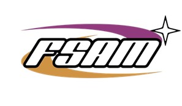
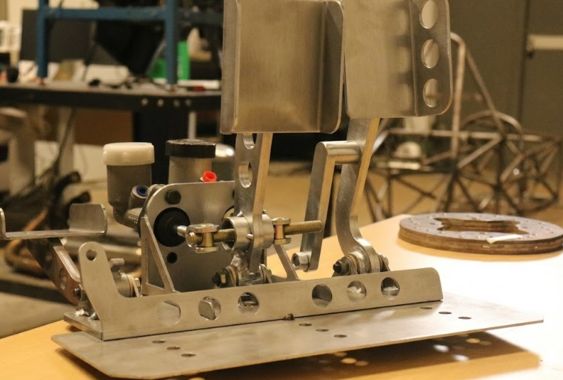
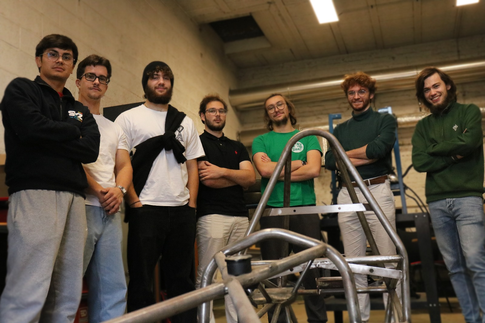
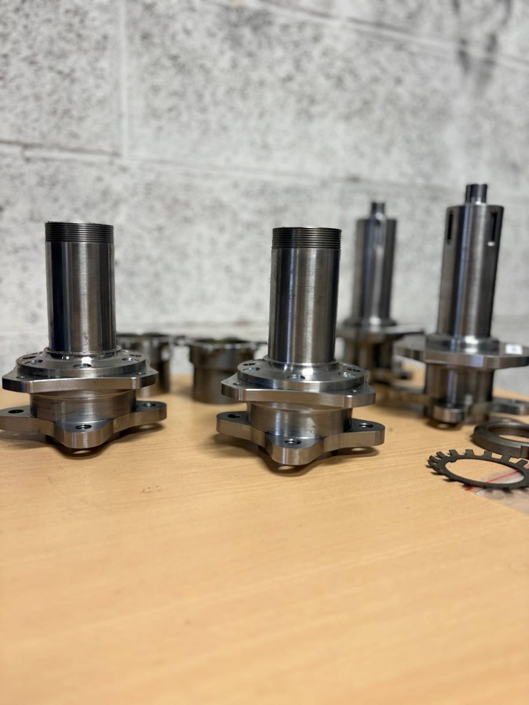
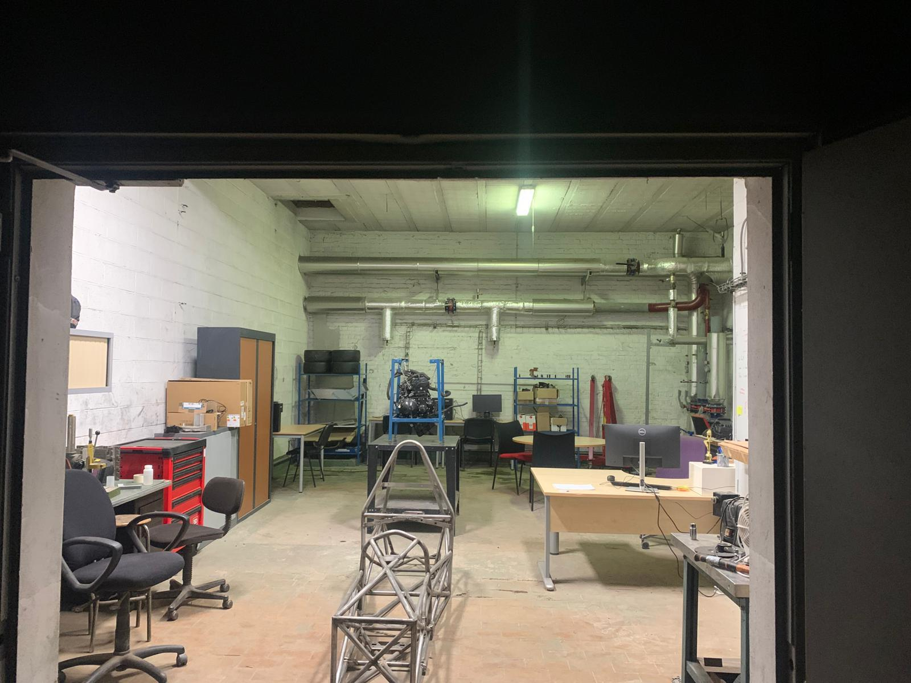

Formula Student: AM-01 Prototype

Mechanical Design & System Integration for the Arts et Métiers Racing Team.
Global Vehicle Integration
The FSAM project involves designing a single-seater race car from scratch to compete at Silverstone. As Powertrain Lead of the association, I oversee the entire powertrain system integration, from engine management to transmission optimization. Working within a multidisciplinary team, I also contributed to the Chassis & Ergonomics department. This phase required rigorous CAD management to ensure the integration of the powertrain, suspension, and driver cell within the tubular frame.
- - Regulation: Strict adherence to FSAE Rules (Safety & Dimensions).
- - Weight: Optimization of every gram for performance.
- - Packaging: Fitting all subsystems in a compact tubular chassis.
(Full Vehicle CAD Assembly)
(Chassis Bracket & Structural Mounting)
Chassis Attachment & Fabrication
Beyond the main tubular frame, I managed the fabrication of specific structural mounting points. The video illustrates the construction of a custom clevis bracket (chape) located on the upper chassis rail.
To ensure high structural integrity, I utilized a multi-plate sheet metal design. I welded several laser-cut steel plates together to form a robust block, which was then permanently welded onto the chassis tubes to serve as a high-load attachment point.
Pedal Box Design & Kinematics
I was fully responsible for the design of the Pedal Box, a critical safety component. The goal was to create a lightweight, adjustable, and rigid system. I designed the throttle and brake mechanisms to withstand high loads (panic braking) while providing precise feedback to the driver.
- - Adjustability: Designed for drivers from 5th to 95th percentile.
- - Materials: Aluminum 6061-T6 for high strength-to-weight ratio.
- - Topology Optimization: Used FEA to remove material in low-stress areas.
- - Brake Bias: Integrated balance bar for front/rear braking distribution.
(Pedal Box Design & Assembly)

(Final Assembly & Manufacturing)
From CAD to Reality
Designing is only the first step. I oversaw the manufacturing process, utilizing CNC machining for the main levers and laser cutting for the base plates.
The assembly phase validated our tolerance stack-up calculations. The physical pedal box (shown here) matched the CAD weight predictions within a 5% margin and successfully passed the high-force actuation tests required for the competition.
Engineering Challenge: APPS Integration
Engineering is about iteration. During the design phase, we encountered a critical issue with the APPS (Accelerator Pedal Position Sensor) mounting. The initial support allowed for micro-deflections that caused signal inconsistencies between the two redundant sensors (a violation of FSAE safety rules).
I redesigned the bracket to increase stiffness and added a precise alignment mechanism, ensuring 100% reliability in the throttle signal.
- - Issue: Sensor misalignment due to bracket flex.
- - Solution: Reinforced ribbing and tolerance adjustment.
- - Result: Passed Scrutineering with zero signal drift.
(Sensor Integration Troubleshooting)
Team Effort & Collaboration
Formula Student is primarily a human adventure. Collaborating with over 30 engineers, managing timelines, and sharing knowledge were as crucial as the technical design itself.

Corporate Relations: Cost Savings Through Partnerships
As Corporate Relations Manager, I played a key role in securing manufacturing partnerships that directly reduced project costs. Formula Student teams operate on tight budgets, and every euro saved allows us to invest in critical components and testing.
Through strategic outreach and negotiations, I successfully established partnerships with two local manufacturers who agreed to produce critical components for free:
- €10,000 saved: Front & rear wheel hubs manufactured by MCN Rinxent
- €2,000 saved: Sheet metal fabrication by SCT Chaudronnerie (Offekerque)
- €3,000 saved: Transportation services secured through local partnerships (VOLVO VK MOTORS Calais, Marck Bois, Comeca, Gressier & Fils, etc.)
- Total Impact: €15,000 in cost reductions through strategic partnerships
Through targeted prospecting of local businesses, I secured not only manufacturing support but also critical logistics partnerships. These relationships reduced financial pressure on the team while establishing long-term connections with industry professionals, opening doors for future collaborations and mentorship opportunities.

(Front & Rear Wheel Hubs - MCN Rinxent)

(FSAM Team Workshop)
Our Workshop: The Heart of Innovation
Beyond design and partnerships, having a dedicated workspace is essential for any engineering team. Our association's workshop serves as the hub where ideas transform into physical reality.
Equipped with hand tools, welding stations, and assembly areas, this space allows team members to prototype, test, and iterate designs rapidly. It's where late-night debugging sessions happen, where components are test-fitted, and where the team bonds over shared challenges and victories.
Managing both the technical and business aspects of FSAM taught me that engineering success requires more than just design skills—it demands resourcefulness, negotiation, teamwork, and the ability to turn constraints into opportunities.
📄 Discover FSAM Project
Download our official brochure to learn more about the Formula Student team and our engineering achievements.
Download FSAM Brochure (PDF)